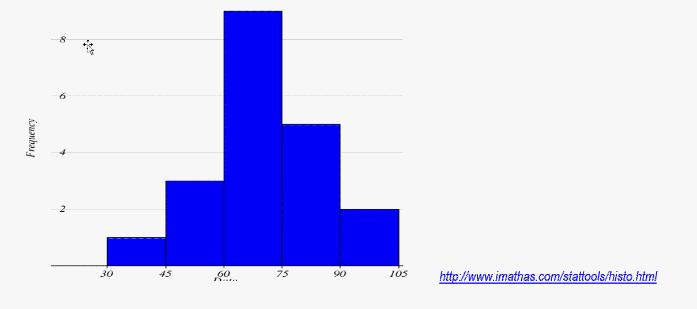
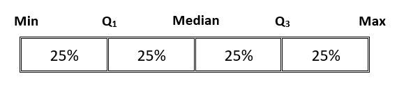
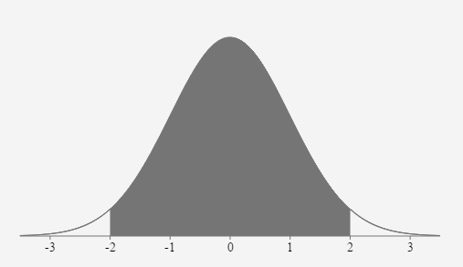
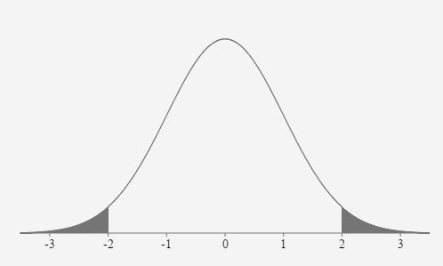

Unit 1 Describing Data
1.8 Measures of Position
Percentiles
Percentiles divide a data set into 100 equal parts. In general you can say that P% of the data falls BELOW the Pth percentile.
To find the percentile that corresponds to a specific data entry, x:
The percentile of \(x=\frac{\text { number of data entries less than } \mathrm{x}}{\text { total number of data entries }} \times 100,\) and then round to the nearest whole number.
- Use the data to calculate percentile of the given test scores:
32 49 53 57 61 64 65 65 67 68 71 72 73 75 79 80 83 85 90 93
- Percentile of 53 =
\(\frac{2}{20} \times 100=10th\) percentile
- Percentile of 64 =
\(\frac{5}{20} \times 100=25th \) percentile
- Percentile of 71 =
\(\frac{10}{20} \times 100=50th\) percentile
- Percentile of 75 =
\(\frac{13}{20} \times 100=65th \) percentile
- Percentile of 90 =
\(\frac{18}{20} \times 100=90th \) percentile
- Percentile of 80 =
\(\frac{15}{20} \times 100=75th \) percentile
- Percentile of 53 =
- IQR: \(Q_1-Q_3\)
- Lower Outlier Critical Value: \(Q_1 – 1.5(IQR)\)
- Upper Outlier Critical Value: \(Q_1 + 1.5(IQR)\)
- Use the data to find the 5-Number summary and identify outliers then construct a box plot.
32 49 53 57 61 64 66 68 68 68 71 72 72 75 79 80 83 85 90 93
- 5 number summary:
- Min:
32
- Q1:
62.5
- Median:
69.5
- Q3:
79.5
- Max:
93
- Min:
- Outlier Calculations: Identify any outliers in our data:
- IQR:
\(Q_{3}-Q_{1}=79.5-62.5=17\)
- Lower Outlier Critical Value:
\(Q_{1}-1.5(Inter-Quartile)=62.5-1.5(17)=37\)
- Upper Outlier Critical Value:
\(Q_{3}+1.5( IQR)=79.5+1.5(17)=105\)
- Outliers in our data:
32 is the only outlier. It is below the lower critical value of 37.
- IQR:
- c) Construct a boxplot for the data.
![A box plot with a horizontal scale from 30 to 100 with intervals of 10 units. The outlier 32 is marked with a point on the left side of the box plot. There is a vertical line segment at 49 (the minimum data point excluding the outlier). A horizontal line connects that to a rectangle in the middle of the graph. The left side of the rectangle is at 62.5 (Q1) and the right side of the rectangle is at 79.5 (Q3). The median of 69.5 is marked with a red vertical line in the rectangle. There is then a horizontal line connecting 79.5 (Q3) with the max data value of 93 which is marked with a vertical line segment.](images/u1s8p2ck.png)
- 5 number summary:
- Use the data to find the 5-Number summary and identify outliers then construct a box plot.
103 100 124 110 156 109 112 105 127 115 117 120
- 5-NUMBER SUMMARY : Use technology to find the five values.
- Min:
100
- Q1:
107
- Median:
113.5
- Q3:
122
- Max:
156
- Min:
- Outlier Calculations:
- IQR:
\(Q_{3}-Q_{1}=122-107=15\)
- Lower Outlier Critical Value:
\(Q_{1}-1.5(Inter-Quartile)=107-1.5(15)=84.5\)
- Upper Outlier Critical Value:
\(Q_{3}+1.5( IQR)=122+1.5(17)=144.5\)
- Outliers in our data:
156 is the only outlier. It is above the upper critical value of 144.5.
- IQR:
- Draw the Box Plot:
![A box plot with a horizontal scale from 100 to 160 with intervals of 10 units. There is a vertical line segment at 100 (the minimum data point). A horizontal line connects that to a rectangle in the middle of the graph. The left side of the rectangle is at 107 (Q1) and the right side of the rectangle is at 122 (Q3). The median of 113.5 is marked with a red vertical line in the rectangle. There is then a horizontal line connecting 122 (Q3) with 127, (the max data value that is not an outlier)which is marked with a vertical line segment. The outlier, 156 is marked with a point on the right side of the box plot.](images/u1s8p3ck.png)
- 5-NUMBER SUMMARY : Use technology to find the five values.
- Comparing z scores: The mean ACT score in the US is 24 with a standard deviation of 4. The mean SAT score in the US is 1100 with a standard deviation of 80. If Alice scores 32 on the ACT and Bob scores 1200 on the SAT, which has a better score, relative to the sample data?
- Alice
- Alice's z-score:
\(\mu=24 ; \quad \sigma=4 ;\quad x=32 ;\quad Z=\frac{x-\mu}{\sigma}\)
\(Z_{32}=\frac{32-24}{4}=2.00\)
- What does this z score mean (in words)?
Alice’s ACT score of 32 is 2 standard.deviations above the population mean of 24.
- Sketch a bell curve and mark the score on the curve

- Alice's z-score:
- Bob
- Bob's z-score: \(\mu=1100 ; \quad \sigma=80 ; \quad x=1200\)
\(Z_{1200}=\frac{1200-1100}{80}=1.25\)
- What does this z score mean (in words)?
Bob’s SAT score of 1200 is 1.25 standard deviations above the population mean of 1100.
- Sketch a bell curve and mark the score on the curve

- Bob's z-score: \(\mu=1100 ; \quad \sigma=80 ; \quad x=1200\)
- Relative to other students in the population, which score is better?
Alice’s relative score is better. She is 2 standard deviations above the mean. Bob’s score is only 1.25 standard deviations above the mean.
- Alice
- Compare the following z scores and interpret the results.
Two common indicators of the health of a population are life expectancy and infant mortality (the number of deaths before age 5 per 1000 children born). In 2018, the mean life expectancy was 72.66 years, with a standard deviation of 7.25. For the same year, the mean infant mortality rate was 29.47 with a standard deviation of 29.22. The life expectancy in South Korea is 81.3 years, and the infant mortality rate in the U.S. is 6.06. Which of these indicators represents a better health outcome?
\(z_{81.3}=\frac{81.3-72.66}{7.25}=1.192\)
\(z_{6.06}=\frac{6.06-29.47}{29.22}=-0.801\)
The life expectancy in South Korea is 1.192 standard deviations above the mean, and the infant mortality rate in the U.S. is 0.801 standard deviations below the mean. South Korea’s life expectancy indicates a better health outcome because it is further from the mean. Note that a negative z-score for infant mortality is positive, it is just not as much better than average as the life expectancy.
- Review of Frequency Distributions
- Use the data to construct a Frequency Distribution Table: Begin with a lower class limit of 30 and a class width of 15.
32 49 53 57 61 64 66 68 68 68 71 72 72 75 79 80 83 85 90 93
CLASS FREQUENCY RELATIVE FREQUENCY 30 - 44
1
0.05
45-59
3
0.15
60-74
9
0.45
75-89
5
0.25
90-104
2
0.10
Cumulative Class Cumulative Frequency Less than 45
1
Less than 60
4
Less than 75
13
Less than 90
18
Less than 105
20
- Find the following using the Frequency Table (not the Relative or Cumulative summary information):
- •Lower Class Limit of the 3rd Class
60
- Lower Class Boundary of the 3rd Class
59.5
- •Lower Class Limit of the 3rd Class
- Midpoint of the 3rd Class
67
- Use the data to construct a Frequency Distribution Table: Begin with a lower class limit of 30 and a class width of 15.
- Use the Frequency Distribution (not Relative or Cumulative) to draw a Histogram of the data:

Five Number Summary and the Box Plot
Quartiles
are measures of location, denoted Q1, Q2 (Median), and Q3, which divide a set of data into four groups with about 25% of the values in each group.
5-Number Summary:
Minimum, Q1, Median, Q3, Maximum
The range of the “middle” 50% of the data.

Outliers:
Observed values that lie an abnormal distance from other values in a random sample from a population. In our course, outliers will be defined as data values outside the boundaries of the max and min outlier critical values.
Outlier Calculations:
Calculating and Comparing Z Scores:
z-score:
: the number of standard deviations a given value of x is above or below the mean.
Sample: \(z=\frac{x-\overline{x}}{s}\)
Population: \(Z=\frac{x-\mu}{\sigma}\)
The Range Rule of Thumb for Unusual Values
According to the range rule of thumb, most values should lie within 2 standard deviations of the mean.
We can therefore identify “unusual” values by determining if they lie outside these limits:
Maximum usual value = \(\mu+2 \sigma\)
Minimum usual value = \(\mu-2 \sigma\)
When defining unusual events, why do we use 2 standard deviations as our distance from the mean?According to the Empirical Rule, we identified the area between z=-2 and z=2 as 0.95 or 95% probability.
This leaves a total probability of .05 or 5% in the two areas outside the region between z=-2 and z=2.
In this section, we have defined an unusual event as one having a less than 5% probability of occurring. Therefore, based on the Empirical Rule, events that fall more than 2 standard deviations away from the mean are considered unusual.
Later, we will refine our definition of unusual and use tools to more precisely calculate the max and min cutoffs for unusual values. We will no longer use the estimations of the Empirical Rule.
DISTRIBUTION/FREQUENCY/ HISTOGRAM/BOX PLOT SUMMARY:
![A chart describing an example of a uniform distribution. The chart contains a frequency table, a histogram and a box plot of a normal distribution. In the frequency table there are 5 classes, 10-19, 20-29, 30-39, 40-49, and 50-59. The frequency for every class is 8. The horizontal axis on the histogram represents each class and the vertical axis represents the frequency of each class. Every bar is exactly the same height at 8. The box plot's horizontal axis is numbered from 10 to 60 counting by 10. The left end of the box is 24.5 and the right end is 44.5. The mean is directly in the middle of the box and is not labeled.](images/u1s8summarya.png)
![A chart describing an example of a symmetric distribution, one with zero skewness. In a symmetric distribution, the mean, median and the mode are the same. The chart contains a frequency table, a histogram and a box plot of a symmetric distribution. In the frequency table there are 5 classes, 10-19, 20-29, 30-39, 40-49, and 50-59. The frequencies are 4,8,16,9,3 respectively. The horizontal axis on the histogram represents each class and the vertical axis represents the frequency of each class. The first bar is at 4, the second bar is at 8, the third bar is at 16, the fourth bar is at 9 and the last bar is at 3. The box plot's horizontal axis is numbered from 10 to 60 counting by 10. The left end of the box is 24.5 and the right end is 44.5. The mean is directly in the middle of the box at 38.5. The left whisker is 14.5 and the right whisker is at 54.5](images/u1s8summaryb.png)
![A chart describing an example of a skewed right distribution, also known as a right tail distribution. The chart contains a frequency table, a histogram and a box plot of a skewed right distribution. In the frequency table there are 5 classes, 10-19, 20-29, 30-39, 40-49, and 50-59. The frequencies are 10,18,6,4, and 2 respectively. The horizontal axis on the histogram represents each class and the vertical axis represents the frequency of each class. The first bar is at 10, the second bar is at 18, the third bar is at 6, the fourth bar is at 4 and the last bar is at 2. The box plot's horizontal axis is numbered from 10 to 60 counting by 10. The left end of the box is 19.5 and the right end is 34.5. The mean is 24.5. The left whisker is 14.5 and the right whisker is at 54.5.](images/u1s8summaryc.png)
![A chart describing an example of a skewed left distribution, also known as a left tail distribution. The chart contains a frequency table, a histogram and a box plot of a skewed left distribution. In the frequency table there are 5 classes, 10-19, 20-29, 30-39, 40-49, and 50-59. The frequencies are 2,4,7,18, and 9 respectively. The horizontal axis on the histogram represents each class and the vertical axis represents the frequency of each class. The first bar is at 2, the second bar is at 4, the third bar is at 7, the fourth bar is at 18 and the last bar is at 9. The box plot's horizontal axis is numbered from 10 to 60 counting by 10. The left end of the box is 34.5 and the right end is 44.5. The mean is also 44.5. The left whisker is 14.5 and the right whisker is at 54.5.](images/u1s8summaryd.png)